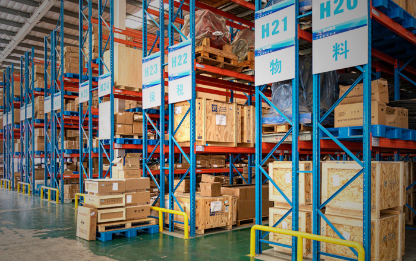
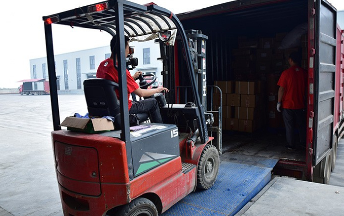

严格遵守国际标准的质量管控体系
有红鸡毛店在生产管理上，引进国际百强餐饮公司管理理念，运用ISO9001国际质量管理体系进行质量管理，并推行6T管理以提高生产效率及产品品质。中央厨房所有出品均通过QS认证，产品出厂合格率达到100%。
完备的仓储物流系统
有红鸡毛店建有完备的仓储物流系统、标准化、精细化的管理模式，中央厨房会根据每家门店的日营业情况进行预估营业、预估单品售卖、门店安全存量等信息进行生产和配送，保证了有红鸡毛店的食品安全性和源料食材品质，也使您不论在哪里的有红鸡毛店吃到的都是同样的味道。%。
标准化流水线
有红鸡毛店斥资千万引进国际一线生产设备，形成标准化生产线。精细化的管理模式，切合消费者需求的消费理念，特色化、高品质的用餐服务和全方位、灵活性的经营策略，有红鸡毛店已经厚积薄发，为进军全国市场做好了充足的准备。
独立的食品研发中心
有红鸡毛店由来自四川烹饪协会的国家级厨师之一，巴蜀民间菜非物质文化遗产传承人范有红先生领衔、组建了专业生产研发部门。不断的创新和研发独有产品，满足了消费者的不同口味和喜好。
稳定可靠的中央厨房 源料统一配送
为保证食材的质量和口味，有红餐饮与国内外各大顶级供货商合作，在全国范围内采购最适合的食材，并严格执行产品制作流程和标准。统一配送方面，全方位保障产业链条每一个环节更加稳定可靠。
非物质文化遗产传承者
“有红辣子鸡”“毛血旺”等产品已被录入四川省非物质文化遗产目录。同时聚焦巴蜀民间菜。